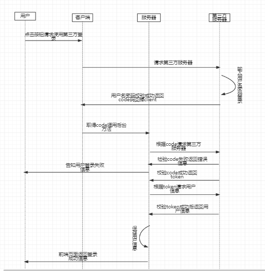

很多网站在刚刚起步的时候都会使用第三方登录来吸引流量。当然，其中也包括我。我的网站上现在是接入了QQ、新浪微博、码云和百度的第三方登录功能.接入这些功能时我发现了一些规律，在这里分享给大家，大家需要接入的话看这一篇文章就可以了。
首先，第一步，也是不得不做的，进入你要接入的开放平台申请账号、填写资料等待审核等。填写资料的时候需要注意的地方是回调地址，这个回调地址就是用户在第三方平台登陆成功以后返回到你的程序的页面。以我的网站为例，我的回调地址就是个人中心，也就是说用户登陆后会进入个人中心页面。（在这里小小的吐槽一下wx，想要接入还得进行开发者认证，人民币300元，不知道为了啥）。
审核通过以后平台会给我们分配一个client_id和一个client_secret,请妥善保管，非常重要。接下来我们进入正题，先放一张图：
不了解UML的同学请先参照这篇文章 ：几分钟几张图教你学会如何使用UML

上面这张我所精心绘画的流程图呢就是本篇博客的所有内容的核心了，所有的第三方登录几乎都是围绕着这么一个套路来进行的。
咱们来按着上方流程图来一步一步的入坑吧（我会同时附上四种登录方式）
在页面上放置登录按钮，类似于这种：点击按钮的时候分别调用下列方法打开第三方登录地址
1 | window.open("https://graph.qq.com/oauth2.0/authorize?response_type=code&client_id=101453375&redirect_uri=http://zhixiang.org.cn/%23/qqLogin&state=1", '_self'); |
相信聪明的你看域名的话就可以看出来上方分别调用的是什么了。这里主要讲一下上方url中的几个参数。response_type=code:这个是固定值，不用管。client_id：这个值就是你审核通过以后获得的client_id，是第三方用来区分你的应用程序的唯一标示，redirect_uri：这个就是回调地址了，用户在第三方登录以后会携带着登录结果值访问回调地址。
2.用户登录成功第三方调用回调地址，回调我们的url大概为这种（http://qq.com?code=*****），我们在第三方回调我们时获取这个code的参数。接下来使用code参数来访问第三方去获取用户token,我们需要分别拼接出以下url：
1 | https://api.weibo.com/oauth2/access_token?client_id=****&client_secret=*****&grant_type=authorization_code&redirect_uri=******&code=******* |
看了上方的url是不是已经发现了我说的为什么这些第三方登录都是一个套路了吧，这里所有的grant_type都是固定值，clien_id不用说，client_secret同样也是第三方给我们的，相信你不会陌生，redirect也不用说。紧接着就是发送Http请求了。这里码云的会有一个坑，在发送请求时必须携带一个header `（User-Agent：Mozilla/5.0 (Windows NT 10.0; Win64; x64) AppleWebKit/537.36 (KHTML, like Gecko) Chrome/58.0.3029.110 Safari/537.36
）`不信的话可以试一试哦，如何在服务器发送http请求可以参考我的另一篇文章：Java工具类之在服务器发送HTTP请求
3.上述请求发送以后我们可以把返回结果转换为json对象，紧接着如果你在此json对象中获取一个key为access_token的值（同时，新浪微博要多获取一个uid字段）那么就代表你离成功又近了一步。你问我要是没有怎么办，没有请debug返回结果并参考各平台错误码确认。现在我认为你已经成功取到了token。
4.如果你是使用的第三方登录不是QQ的话请忽略这一步，QQ请先使用access_token访问下面这个地址获取一个openId
https://graph.qq.com/oauth2.0/me?access_token=*********
5.现在已经走到了最后一步了。继续http请求：
1 | https://api.weibo.com/2/users/show.json?access_token=*******&uid=******** |
上方我们唯一陌生的可能是QQ的oauth_consumer_key字段了，其实不陌生，他就是你的client_id.请求发送完毕以后就可以得到用户信息了，
参照平台的字段对应的意义我们选取需要的就可以了。